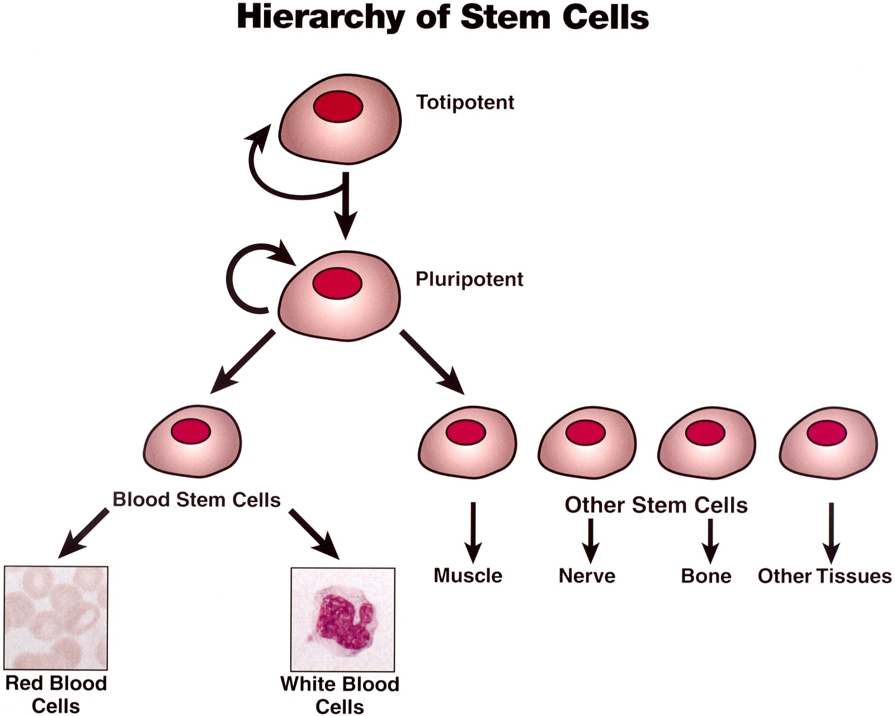

TL;DR
Our technology will require an initial wave of robots to be launched into space, and from there, they will suffice as a renewable process. The system will work like stem cells, having each robot created either choose a role or reproduce to make more robots, which solves a lot of problems. It will also use parabolic mirrors in the mining process, heating up rock which can be separated into usable minerals. Overall, this method will be revolutionary, both solving environmental issues here on Earth, and providing humanity with almost limitless resources.
Overview
Our technology, named MRRM (short for Multifunctional Reproducing Robots for Mining) will be a system of self-reproducing robots based in outer space which collects minerals from asteroids and sends processed minerals back to Earth. This system will be built gradually, starting with an initial wave of robots which will require a large but achievable amount of earth materials to build and deploy. However, this initial process will be the only process consuming materials from earth while developing our technology; the rest of the robots will be built from resources obtained in space itself. This first wave robots will be propelled into space and land on a mineral-rich planet such as Mars, which will eventually become the "home base" for the entire operation. The first goal will be reproduction; some robots will mine the planet's resources, some will fly out to asteroids and obtain their resources, some will convert the resources to energy. Once the robots have gathered sufficient materials, designated reproduction robots will begin to construct new robots with these materials mined in space, using advanced 3D printing technology. In the end, our system of robots will perform different tasks contributing to the overarching goal of mining asteroids and sending their minerals back to earth.
Stem Cells
One of the scientific principles involved in MRRM is based on stem cells. According to Mayo Clinic, "Stem cells are the body's raw materials — cells from which all other cells with specialized functions are generated…either become new stem cells (self-renewal) or become specialized cells." This correlates to how the robots in MRRM operate: they will first replicate exact versions of themselves, similar to the self-renewing stem cells, and then start taking roles. This solution has many advantages; having robots build other robots outside of Earth not only provides a workaround to much of the energetic cost of transporting a large amount of materials from the Earth, but it also saves the Earth's atmosphere from pollution that can result from unnecessary launches.
Parabolic mirrors and Fermat's principle
Another scientific principle involved in MRRM is Fermat’s principle of least time. Part of our solution, mining asteroids, will have robots use a parabolic mirror to concentrate light from the sun to heat up the asteroid’s gas and rock. The principle behind this is the Fermat principle of least time, which states that when light passes through two different materials, it is always bended by the time it gets to the second material in a way so that it takes the least amount of time possible to travel through both materials. Using Fermat’s principle, it can be proven that it’s possible to direct parallel light rays to meet at the focus of a parabolic mirror. Since light carries energy, we use this energy to heat up the air. This heat can be used to mine the rock by melting it into a stew which can later be separated via a centrifuge. Using this method, we can efficiently extract materials from asteroids purely by solar energy, which is clean and renewable.
In conclusion
To humanity and its future, MRRM will be extremely important. Present factors such as overpopulation and developing countries needing larger economies are causing an accelerated growth in mining; this in turn harms the environment and consumes more and more of earth’s limited resources each year. MRRM would be groundbreaking, in that it would completely solve these environmental issues currently present in mining. Moreover, it would provide an almost limitless stream of resources that humanity could use to built anything beyond their wildest dreams.

A depiction of a human stem cell
 How a parabolic mirror focuses light into a point
How a parabolic mirror focuses light into a point